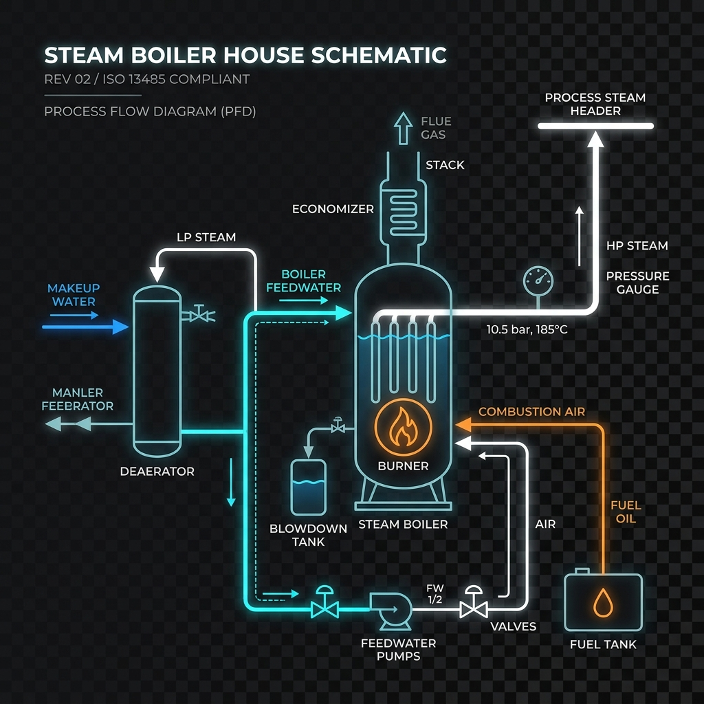
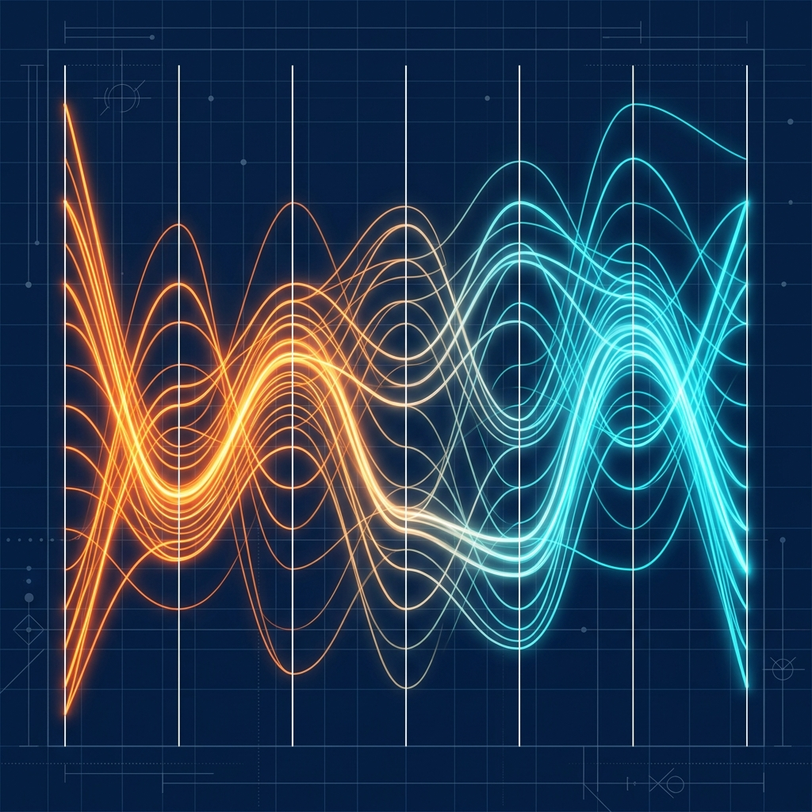

SankeyLoop
Professional process and energy flow diagramming tool. Model mass/energy loops, compare scenarios, and overlay thermal gradients.

BoilerHouse Sim
Simulate boiler house utility balances. Tweak burner air-fuel ratio, drum pressure, makeup water, continuous blowdown, and economizer settings.

Stratified Thermal Storage Calc
Simulate a stratified storage tank. Drag supply and return connections up and down the tank height and track temperature gradients.

Heat Pump p-h Diagram
Visualize heat pump states on a full Pressure-Enthalpy diagram. Dynamic coefficient of performance (COP) and thermodynamic state tracking.

Heat Pump Control Visualizer
Interactive system schematic coupled with a live heat pump simulator. View loop flows, pressures, and PI control feedback variables.

Pinch Analysis Tool
Input process streams to calculate utility heat loads, interval cascades, and locate pinch temperatures. Plots composite & grand composite curves.

Parallel Coordinate Plotter
Analyze multi-variable tradeoffs, perform scenario comparison, and filter high-dimensional design spaces interactively.

PFD – Data Overlay
Overlay timeseries simulation data directly onto Process Flow Diagrams. Export animations as MP4 video files using WebCodecs.